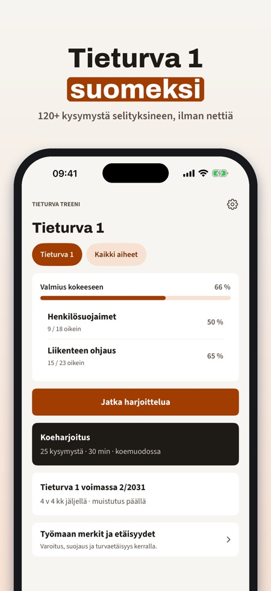
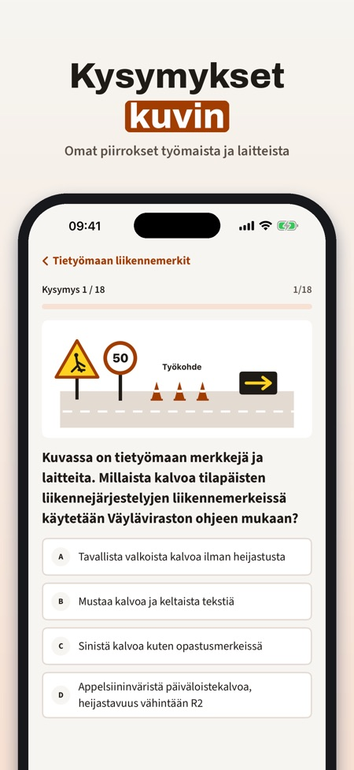
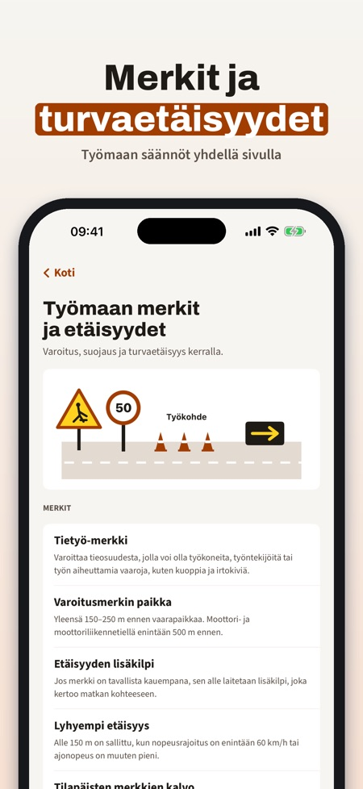

Work zone safety test prep. Practise for Tieturva 1 (Finland), Arbete på väg steg 1 (Sweden) and arbeidsvarsling kurs 1 (Norway): questions with explanations and a mock test, offline.



Tieturva Treeni helps you practise for road work safety training – Tieturva 1 in Finland, Arbete på väg (APV) steg 1 in Sweden and arbeidsvarsling kurs 1 in Norway – with an explanation for every answer. Questions are in Finnish, Swedish and Norwegian, written for each country's rules.
Without a purchase you can practise 20 questions and use the glossary, the signs and distances page and the reminder. The full version is a one-time purchase that unlocks all questions, practice tests and mistake review. No subscription.
Tieturva Treeni is independent and not affiliated with any authority or training provider. You take the course with a training provider.